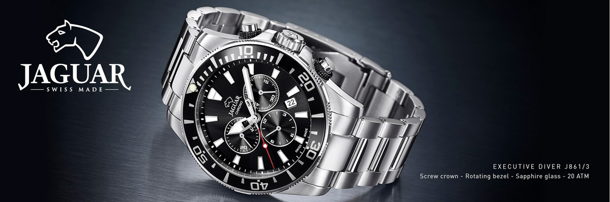

B:PM Export-Import d.o.o
B:PM se svrstava među lidere na našem tržištu u domenu ponude i plasmana ručnih satova i nakita najboljih svetskih proizvođača.
Firma B:PM je ekskluzivni distributer sledećih renomiranih svetskih brendova: Fossil, Skagen, Emporio Armani, Armani Exchange, DKNY, Diesel, Michael Kors, Tommy Hilfiger, Festina, Candino, Jaguar, Sector, Just Cavalli, Fortis, Bulova i nakit brendova Fossil, Skagen, Diesel, Just Cavalli, Emporio Armani, Tommy Hilfiger, Morellato.
Takodje u svom programu imamo i narukvice za satove od različitih materijala: kože, metala, gume, silikona - poznatog španskog proizvodjača Piero Magli.
B:PM je privatna kompanija osnovana 1988. godine za koju danas radi više od osamdeset ljudi. Na tržištu smo prisutni više od dve decenije i svakim segmentom poslovanja prezentujemo izuzetno visok kvalitet ponude finih ručnih satova. Specijalizovani servis u Beogradu je ponos ove firme, gde kažu da mogu izaći u susret svim zahtevima ljubitelja satova. Pored trinaest sopstvenih radnji i show room-a veleprodaje u kojima je moguće naći naš celokupan asortiman, B:PM je razvio bogatu maloprodajnu mrežu u Srbiji i Crnoj Gori. Tako se danas naši satovi mogu naći na više od sto prodajnih mesta širom zemlje.
